一本范畴论书没有真正合适的结束位置，因为总有更多东西可学。范畴论是一片广阔领域；与此同时，同样的主题、概念与模式显然会反复出现。有句话说，所有概念都是 Kan 扩张。确实，可以用 Kan 扩张导出极限、余极限、伴随、Monad、Yoneda 引理以及更多内容。范畴概念本身出现在每个抽象层级，幺半群与 Monad 也是如此。哪一个最基础？事实证明，它们全都彼此关联，在永无止境的抽象循环中互相导出。我决定，用这些联系来结束本书也许很合适。
双范畴
范畴论最困难的一面，是不断切换视角。以集合范畴为例，我们习惯用元素定义集合：空集没有元素，单元素集合有一个元素，两个集合的笛卡尔积是有序对的集合，等等。但讨论 Set 范畴时，我要求你忘掉集合内容，转而关注它们之间的态射（箭头）。偶尔可以掀开盖子，看一眼 Set 中某个泛构造用元素描述是什么；终对象原来是单元素集合，等等。但这些只是合理性检查。
函子被定义为范畴之间的映射。把映射看成某个范畴中的态射很自然；函子确实是范畴所成范畴中的态射（若要回避大小问题，就取小范畴）。把函子视为箭头时，我们放弃了它对范畴内部（对象与态射）如何作用的信息，正如在 Set 中把函数视为箭头时放弃它对集合元素如何作用的信息。但任意两个范畴之间的函子本身也形成范畴。这次，你被要求把在一个范畴中是箭头的东西，当成另一个范畴中的对象：在函子范畴中，函子是对象，自然变换是态射。我们发现，同一个东西可以是一个范畴中的箭头、另一个范畴中的对象。把对象朴素地看成名词、把箭头看成动词的观念并不成立。
与其在两个视角之间切换，不如尝试把它们合并。这便得到 2-范畴：对象称为 0-胞（0-cell），态射称为 1-胞（1-cell），态射之间的态射称为 2-胞（2-cell）。
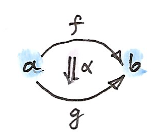
范畴所成的范畴 Cat 是直接的例子：范畴是 0-胞，函子是 1-胞，自然变换是 2-胞。2-范畴的定律告诉我们，任意两个 0-胞之间的 1-胞构成范畴（换言之，C(a,b) 是 Hom 范畴，而非 Hom 集）。这与先前“任意两个范畴之间的函子构成函子范畴”的断言完全契合。
特别地，从任意 0-胞回到自身的 1-胞也构成范畴，即 Hom 范畴 C(a,a)；而这个范畴还有更多结构。C(a,a) 的成员既可看作 C 中箭头，也可看作 C(a,a) 中对象。作为箭头，它们能彼此复合；作为对象，复合变成把对象对映射到对象的映射。事实上，它很像积——准确说是张量积。这个张量积有单位：恒等 1-胞。事实证明，在任意 2-范畴中，Hom 范畴 C(a,a) 自动成为幺半范畴，以 1-胞复合作为张量积；结合律与单位律直接来自相应的范畴定律。
看看在典范 2-范畴 Cat 中这意味着什么。Hom 范畴 Cat(a,a) 是 a 上自函子的范畴，自函子复合在其中扮演张量积，恒等函子是这个积的单位。之前已经见过自函子形成幺半范畴（定义 Monad 时用过），现在看到这是更一般的现象：任意 2-范畴中的自 1-胞都构成幺半范畴。稍后推广 Monad 时会再回到这一点。
你可能记得，在一般幺半范畴中，我们并不坚持幺半律严格成立；单位律和结合律在同构意义下成立通常就够了。在 2-范畴中，C(a,a) 的幺半律来自 1-胞的复合律。这些定律是严格的，所以总会得到严格幺半范畴。不过也可以放松这些定律。例如，可以说恒等 1-胞 ida 与另一个 1-胞 f:a→b 的复合同构于 f，而不是等于 f。1-胞的同构用 2-胞定义。换言之，存在可逆的 2-胞：
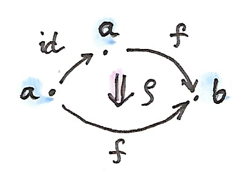
左单位律与结合律也可同样处理。这种放松的 2-范畴称为双范畴（bicategory）（还有一些这里略去的相干律）。
不出所料，双范畴中的自 1-胞形成具有非严格定律的一般幺半范畴。
一个有趣例子是 Span 的双范畴（bicategory of spans）。对象 a 与 b 之间的 Span（span），由一个对象 x 与一对态射组成：
g:x→b
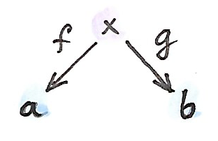
你可能记得，我们在范畴积的定义中用过 Span。这里要把 Span 看成双范畴中的 1-胞。第一步是定义 Span 复合。假设有一个相接的 Span：
g′:y→c
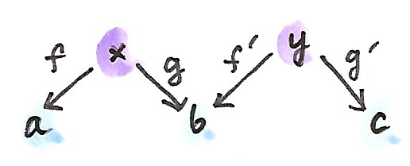
复合应是以某个 z 为顶点的第三个 Span。最自然的选择是沿 f′ 对 g 取拉回。记得，拉回是对象 z 与两个态射：
h′:z→y
它们满足：
并在所有这类对象中具有泛性。
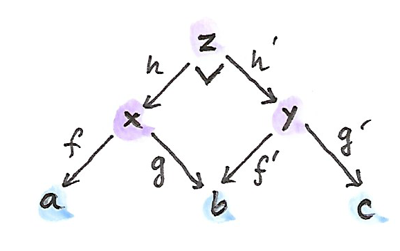
暂且只关注集合范畴上的 Span。此时拉回就是笛卡尔积 x×y 中满足下式的有序对 (p,q) 的集合：
两个端点相同的 Span 之间的态射，定义为其顶点之间使相应三角形交换的态射 h。
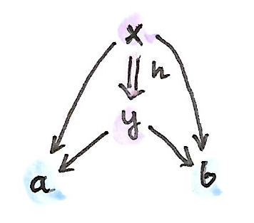
总结一下，在双范畴 Span 中：0-胞是集合，1-胞是 Span，2-胞是 Span 态射。恒等 1-胞是一个退化 Span，其中三个对象相同、两个态射都是恒等态射。
此前还见过另一个双范畴例子：Profunctor 的双范畴 Prof，其中 0-胞是范畴，1-胞是 Profunctor，2-胞是自然变换。Profunctor 的复合由 Coend 给出。
Monad
现在你应该很熟悉“Monad 是自函子范畴中的幺半群”这一定义。让我们带着新认识重看它：自函子范畴只是双范畴 Cat 中自 1-胞的一个小小 Hom 范畴。我们知道它是幺半范畴，张量积来自自函子复合。幺半群被定义为幺半范畴中的对象——这里是自函子 T——再配上两个态射。自函子之间的态射是自然变换。第一个态射把幺半单位（恒等自函子）映射到 T：
第二个态射把张量积 T⊗T 映射到 T。张量积由自函子复合给出，所以得到：
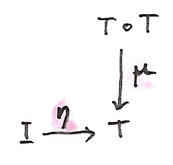
我们认出它们就是定义 Monad 的两个运算（Haskell 中称为 return 与 join），幺半群定律会变成 Monad 定律。
现在从定义中去掉对自函子的所有提及。从双范畴 C 开始，选取其中一个 0-胞 a。如前所见，Hom 范畴 C(a,a) 是幺半范畴。因此，可以在 C(a,a) 中选一个 1-胞 T 与两个 2-胞：
μ:T∘T→T
并要求满足幺半律。我们把这称为 Monad。
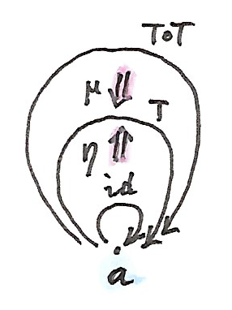
这是只使用 0-胞、1-胞和 2-胞的、更一般的 Monad 定义。应用到双范畴 Cat 时，它还原成通常的 Monad。再看看其他双范畴中会发生什么。
在 Span 中构造 Monad。选择一个 0-胞，即一个集合；出于很快会明白的原因，称为 Ob。接着选一个自 1-胞：从 Ob 回到 Ob 的 Span。其顶点是一个称为 Arr 的集合，并配有两个函数：
cod:Arr→Ob
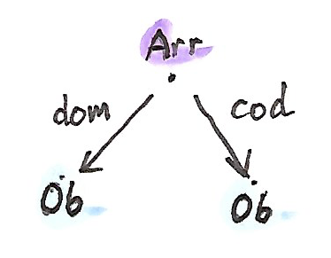
把 Arr 集合的元素称为“箭头”。如果再告诉你把 Ob 中元素称为“对象”，你也许能猜到将走向哪里。两个函数 dom 与 cod 为一支“箭头”指派定义域与陪域。
要让这个 Span 成为 Monad，需要两个 2-胞 η 与 μ。这里的幺半单位，是从 Ob 到 Ob 的平凡 Span，顶点是 Ob，两个函数都是恒等函数。2-胞 η 是顶点 Ob 与 Arr 之间的函数。换言之，η 为每个“对象”指派一支“箭头”。Span 中 2-胞必须满足交换条件；这里是：
cod∘η=id
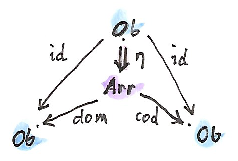
写成分量：
其中 ob 是 Ob 中一个“对象”。换言之，η 为每个“对象”指派一支定义域和陪域都是该对象的“箭头”。把这支特殊箭头称为“恒等箭头”。
第二个 2-胞 μ 作用于 Span Arr 与自身的复合。复合由拉回定义，所以其元素是 Arr 中元素的有序对——“箭头”对 (a₁,a₂)。拉回条件是：
称 a₂ 与 a₁“可复合”，因为一支箭头的定义域是另一支的陪域。
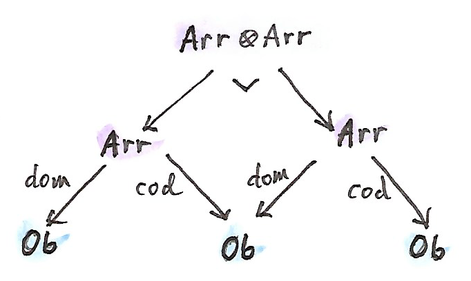
2-胞 μ 是把可复合“箭头”对 (a₁,a₂) 映射为 Arr 中一支“箭头” a₃ 的函数。换言之，μ 定义“箭头”的复合。
很容易验证，Monad 定律对应箭头的恒等律与结合律。我们刚刚定义了一个范畴（请注意，是一个对象与箭头都构成集合的小范畴）。
总而言之，范畴就是 Span 双范畴中的 Monad。
这个结果令人惊叹之处在于：它把范畴与 Monad、幺半群等其他代数结构放在同一地位。“成为范畴”并没有什么特殊，它只是两个集合与四个函数。事实上，甚至不需要单独的对象集合，因为对象可以与恒等箭头等同（它们一一对应）。所以，真正需要的只是一个集合与几个函数。考虑到范畴论在整个数学中的关键作用，这是一个非常令人谦逊的认识。
习题
- 推导双范畴中以自 1-胞复合定义的张量积之单位律与结合律。
点击展开参考答案
固定 0-胞 a，Hom 范畴 C(a,a) 的对象是自 1-胞。定义 f⊗g=f∘g，单位对象为恒等 1-胞 Ia。双范畴自带可逆 2-胞：
λf:Ia∘f⇒f
ρf:f∘Ia⇒f
αfgh:(f∘g)∘h⇒f∘(g∘h)它们正是张量积的左右幺元子和结合子。双范畴公理中的五边形与三角形相干条件，正是幺半范畴所需的相干律。因此自 1-胞复合形成幺半结构；在严格 2-范畴中这些 2-胞都是恒等，得到严格幺半范畴。
- 验证 Span 中 Monad 的 Monad 定律对应所得范畴的恒等律与结合律。
点击展开参考答案
单位 η 为每个对象 x 给出箭头 idx。两条 Monad 单位律把 η 插入可复合箭头对的左边或右边，分别给出：
f∘iddom f=f
idcod f∘f=f乘法 μ 把可复合箭头对映射为复合箭头。Monad 结合律比较 μ∘(μ×id) 与 μ∘(id×μ)；在可复合三元组 (f,g,h) 上，它正好说：
h∘(g∘f)=(h∘g)∘f所以三条 Monad 定律逐一变成范畴的左右恒等律与结合律。
- 证明 Prof 中的 Monad 是一个对象上恒等的函子。
点击展开参考答案
在 Prof 中固定 0-胞 C。Monad 的 1-胞是 Profunctor T:C↛C；把新范畴 D 定义为与 C 有相同对象，并令 D(a,b)=T(a,b)。单位 2-胞 η:HomC⇒T 把 C 中每个态射送入 D；乘法 2-胞 μ:T∘T⇒T 利用 Coend 复合，把一对首尾相接的 T-箭头合成为一个 T-箭头。
Monad 的单位律和结合律保证这确实定义 D 的恒等箭头与结合复合。于是 η 的各分量构成函子 J:C→D；它不改变对象，只改变 Hom 集，所以 J 在对象上恒等。反过来，任意对象上恒等函子 C→D，以 D 的 Hom Profunctor、恒等嵌入和 D 中复合定义一个 Prof 中的 Monad。
- Span 中 Monad 的 Monad 代数是什么？
点击展开参考答案
Span 中的 Monad 是一个小范畴 C。它的代数是一组“由 C 的箭头作用的元素”：取一个带锚点 p:X→Ob(C) 的集合，并给出作用：
Arr(C)×Ob(C)X→X当 f:p(x)→y 时，把 (f,x) 映为 f·x，且 p(f·x)=y。代数单位律要求 id·x=x；结合律要求 (g∘f)·x=g·(f·x)。按这里的左右复合约定，这等价于函子 C→Set：对象 y 对应纤维 p⁻¹(y)，箭头对应纤维间的作用函数。若采用相反的 Span 方向约定，则得到 Cop→Set。